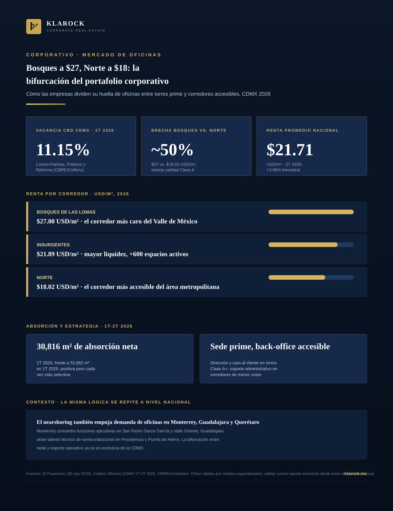

Corporativo · 2026-09-30
Las empresas en la Ciudad de México dejaron de elegir un solo corredor para su oficina. Según El Financiero, el mapa corporativo se reacomoda: los corredores accesibles ganan terreno mientras las torres prime se reservan para la sede —una brecha de renta de hasta 50% que ya es parte de la estrategia, no un accidente del mercado.

Durante años, elegir ubicación corporativa en la Ciudad de México fue una decisión binaria: pagar la prima de un corredor prime —Reforma, Polanco, Bosques de las Lomas— o sacrificar imagen de marca por ahorro. Los datos del primer semestre de 2026 y el reacomodo del mapa corporativo que reportó El Financiero el 30 de septiembre muestran que esa lógica ya no aplica: las empresas más sofisticadas no están escogiendo entre esas dos opciones, están usando ambas, al mismo tiempo, dentro del mismo portafolio.
La renta corporativa promedio nacional avanzó 3.96% trimestral en el 2T 2026, hasta USD $21.71/m², y la vacancia general de la CDMX mantiene tendencia a la baja. Eso significa que las condiciones favorables de negociación en los corredores accesibles —que hoy permiten capturar calidad Clase A a precio de corredor secundario— no son un estado permanente del mercado. Conforme la demanda operativa siga migrando hacia Insurgentes, Norte y nodos equivalentes en otras ciudades, es razonable esperar compresión de vacancia y presión al alza en renta también ahí.
En Klarock ayudamos a direcciones de bienes raíces corporativos a construir ese análisis: vacancia, renta por m² y proyección de absorción neta, corredor por corredor, para decidir qué función va dónde.
Escríbenos y un socio director te contactará en menos de 24 horas hábiles.
Contactar a un Socio Director